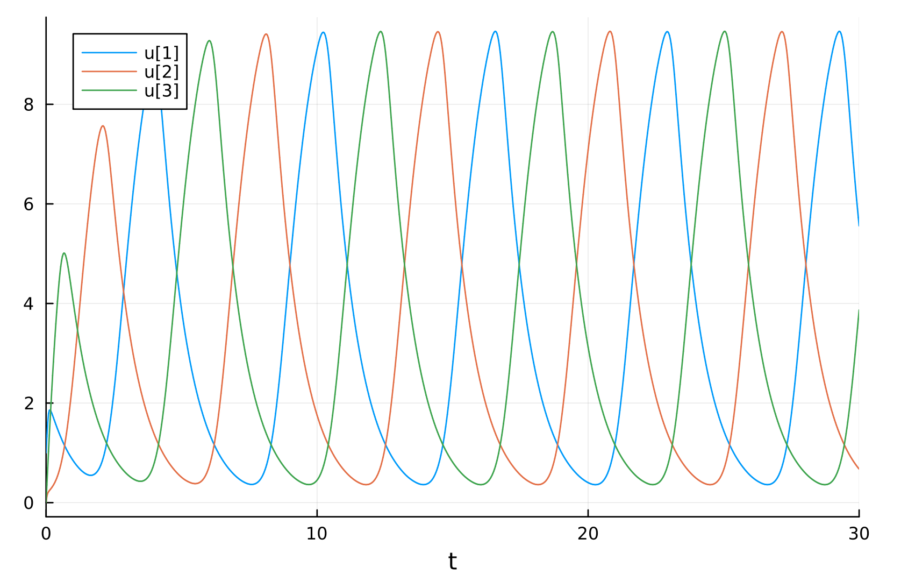

2024-01-22
Shwmae!
Last time we were messing with partial differential equations.
This time we will be modelling the repressilator by delay differential equations (DDEs)! For simplicity's sake we'll be using a posttranslational model, unlike in part 1 where we used a posttranscriptional model. It would be fairly trivial to extend this model to also consider mRNA.
DDEs?
Delay Differential Equations (PDEs) are a type of partial differential equations where functions are defined in terms of its values at previous times. See wikipedia for more information.
Creating the Model
Import libraries used for modelling. In many ways, delay differential equations are much simpler than other types of
partial differential equation to solve—for both the human and the computer. We'll only be needing DifferentialEquations
and Plots this time around:
using DifferentialEquations, Plots
We'll be using the equations: $$ \frac{\mathrm{d} x_1}{\mathrm{d}t} = \frac{\beta}{1 + x_3^n} - x_1 $$ $$ \frac{\mathrm{d} x_2}{\mathrm{d}t} = \frac{\beta}{1 + x_1^n} - x_2 $$ $$ \frac{\mathrm{d} x_3}{\mathrm{d}t} = \frac{\beta}{1 + x_2^n} - x_3 $$
For now we won't be doing any kind of fancy modularisation or anything, we'll just
define a function in line with typical DifferentialEquations usage:
function repressilator(du, u, h, p, t)
beta, n # define parameters
du[1] = beta / (1 + u[3]^n) - u[1] # define differential equations
du[2] = beta / (1 + u[1]^n) - u[2]
du[3] = beta / (1 + u[2]^n) - u[3]
end
Set some sensible parameter values for oscillations. It would be pertinent to modify these values as needed for the model. Having beta = 1 and n = 2 for example, would not result in any oscillations.
beta = 12 # arbitrary value I plucked from the sky
n = 4 # must be > 2 for oscillations
Define some other relevant information about the model.
p = (beta, n) # p is a tuple representing the model parameter
tspan = (0.0, 30.0) # timespan to model
u0 = [1.0, 0.0, 0.0] # initial conditions
h(p,t) = ones(3) # function representing the values before t=0
Now solve and plot the system:
prob = DDEProblem(repressilator, u0, h, tspan, p)
plot(solve(prob))
gui()
Results
The graph produced:

Full text of code:
repressilator.jl
using DifferentialEquations, Plots
function repressilator(du, u, h, p, t)
beta, n # define paramet
du[1] = beta / (1 + u[3]^n) - u[1] # define differe
du[2] = beta / (1 + u[1]^n) - u[2]
du[3] = beta / (1 + u[2]^n) - u[3]
end
# set parameter values
beta = 12 # arbitrary value I plucked from the sky
n = 4 # must be > 2 for oscillations
p = (beta, n) # p is a tuple representing the model parameters
tspan = (0.0, 30.0) # timespan to model
u0 = [1.0, 0.0, 0.0] # initial conditions
h(p,t) = ones(3) # function representing the values before t=0
# solve and plot problem
prob = DDEProblem(repressilator, u0, h, tspan, p)
plot(solve(prob))
gui()